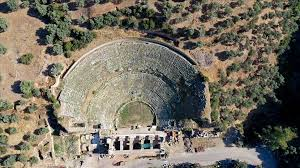
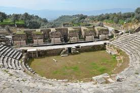

Tarihi MÖ 3. yüzyıla kadar uzanmaktadır.MÖ 3. yüzyılda Seleukos’un oğlu I. AntiokhosSoter tarafından eşi adına şehri kurdurduğu bazı kaynaklarda gösterse de, Kent ile ilgili en önemli bilgileri yaşamının büyük bölümünü Nysa'da geçiren ünlü Coğrafyacı Strabon'dan almaktadır.Mitolojide Hermes, çocuk Dionysos’u büyütmesi için Nysa Dağının perilerine emanet etmiştir


 "Aydın"a dönmek için basın
"Aydın"a dönmek için basın